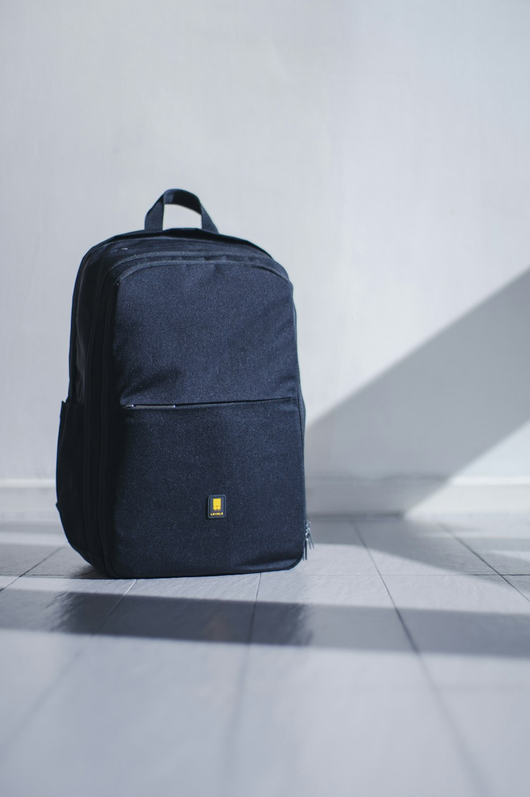

1. The Biological Aging of Leather: Moisture Equilibrium and Lipid Loss
Full-grain vegetable-tanned leather is an active, organic biological matrix. Unlike inert synthetic polymers or heavy polyurethane-coated hides, natural leather continually interacts with ambient atmospheric conditions. Within its microscopic collagen fibril bundles resides an equilibrium moisture content of approximately 12% to 15%, stabilized by natural lipids and fat-liquors introduced during the post-tanning milling process.
Over years of use, exposure to arid indoor heating, intense sunlight, and air conditioning causes these natural oils to evaporate. If the internal moisture content falls below 8%, collagen fibers become brittle and stiff, leading to microscopic fractures across the flex points of the bag. Conversely, excess humidity (>70% RH) in stagnant storage creates prime conditions for fungal spores and mildew growth.
2. Microclimate Storage: Temperature, Relative Humidity, and Breathable Linens
Preserving an heirloom satchel collection begins with establishing a stable microclimate:
- Relative Humidity: Maintain ambient humidity between 45% and 55% RH. Use silica gel packs in surrounding wardrobe cabinets, but never place desiccant bags directly inside the leather satchel.
- Ambient Temperature: Store between 16°C and 22°C (60°F to 72°F) away from direct HVAC heat ducts, radiators, and exterior uninsulated walls.
- Zero Plastic Enclosures: NEVER store leather bags in sealed plastic bags or vinyl containers. Leather requires continuous micro-air circulation; sealed plastic traps residual moisture, causing plasticizer migration and catastrophic mold blooms.
- Organic Cotton Dust Bags: Always wrap each bag in an undyed 100% organic cotton or linen dust bag that permits natural vapor diffusion while blocking dust and UV rays.
- Acid-Free Tissue Stuffing: Loosely stuff the bag interior with acid-free tissue paper or unbleached cotton pillows to maintain internal gusset geometry without overstretching seams.
3. Leather Conditioner Ingredient Safety Analysis Table
Leather Conditioner Ingredient Safety Analysis
| Conditioning Agent | Molecular Compatibility with Veg-Tan | Long-Term Fibril Effect | Conservator Recommendation |
|---|---|---|---|
| Pure Organic Beeswax | 100% Compatible; forms breathable, water-resistant barrier | Locks moisture, nourishes flax stitching, zero rotting | Highly Recommended (Primary Balms) |
| Cold-Pressed Jojoba Oil | Liquid wax ester mimicking natural sebum | Deep collagen penetration; will not oxidize or turn rancid | Highly Recommended (Deep Hydration) |
| Neatsfoot Oil (Pure) | Organic bovine tallow derivative | Excellent softening, but darkens pale leather rapidly | Use with Caution (Darker leathers only) |
| Petroleum Jelly / Mineral Oils | Incompatible petrochemical hydrocarbons | Dissolves natural collagen bonds; rots linen stitching | STRICTLY FORBIDDEN |
| Silicone Sprays | Synthetic polymer film barrier | Chokes leather pores permanently; creates peeling white film | STRICTLY FORBIDDEN |
4. Lipid Replenishment: Pure Organic Oils vs. Harmful Petroleum Derivatives
When conditioning fine vegetable-tanned leather, the molecular structure of the balm is paramount. Modern commercial polishes frequently contain cheap petroleum distillates, paraffin waxes, and synthetic silicones. While they provide an instant synthetic shine, petroleum hydrocarbons actually act as slow solvents, dissolving the natural fat-liquors inside the hide and rotting natural flax linen thread.

We advise utilizing only natural wax esters: a proprietary blend of organic botanical beeswax, unrefined jojoba oil, and cold-pressed sweet almond oil. Jojoba oil is chemically a liquid wax ester rather than a triglyceride, meaning it will never oxidize, turn rancid, or foster bacterial growth within the hide.
5. Emergency Protocols: Water Stains, Rain Exposure, and Oil Extraction
Accidents occur during active travel. Following the correct emergency protocol prevents permanent damage:
Caught in Heavy Rain
Immediately blot (do not rub) surface water droplets with a clean, dry microfiber cloth. Stuff the bag with dry towels to maintain shape. Allow it to air-dry naturally at room temperature over 24 hours. NEVER use a hairdryer, radiator, or direct heater, which will permanently shrink and warp collagen fibers.
Water Ring Watermark Formation
If rain leaves faint water drop rings on pale veg-tan leather, take a slightly damp (distilled water only) sponge and gently wipe the entire panel from seam to seam in long, even strokes. This creates uniform moisture saturation across the whole panel, allowing it to dry without boundary ring marks.
Grease or Food Oil Spills
Do not apply liquid detergents or harsh cleaners. Dust the stain generously with pure French white kaolin clay powder or cornstarch. Leave undisturbed for 12 hours to allow the clay to draw the lipid droplets out through capillary suction, then brush away with a soft horsehair brush.
6. Preserving Sand-Cast Brass and Palladium Hardware from Oxidation
Solid brass naturally oxidizes, producing a mellow antique golden glow. If you prefer to maintain a high mirror polish, buff the brass gently with a microfiber jewelers' cloth infused with micro-crystalline Renaissance wax. Avoid liquid chemical metal polishes containing harsh ammonia, as chemical runoff will severely discolor adjacent leather seams.
For palladium and 24K gold plated components, simply wipe down with a dry, lint-free optical lens cloth after handling to remove acidic fingerprint oils and atmospheric sulfur residues.
7. The Collector's 4-Season Maintenance & Reconditioning Schedule
To ensure your IvorySatchelRidge bag passes seamlessly to the next generation in museum condition, establish a four-season preservation ritual:
- Spring Awakening (April): Lightly brush all seams and creased margins with a dense horsehair brush to remove winter dust. Apply a light veil of jojoba-beeswax cream and let cure for 4 hours before buffing.
- Summer UV Check (July): Inspect high-friction contact points (base corners, handle apex). Rotate display placement to prevent uneven sun exposure on un-patinated ivory hides.
- Autumn Deep Nourishment (October): Prior to dry winter indoor heating season, apply a thorough double-coat of conditioning balm. Pay extra attention to handle anchor tabs and shoulder strap flexing zones.
- Winter Storage Inspection (January): Check wardrobe hygrometer readings; ensure bags are elevated off cold floorboards and restuffed with fresh acid-free tissue.
8. Leather Preservation & Restoration FAQ
In most cases, yes. By placing the piece in a controlled humidity chamber (65% RH) and applying graduated micro-emulsions of jojoba wax ester over several weeks, the dried collagen fibrils can slowly reabsorb moisture without cracking.
Because our Lin Câblé linen thread is hand-waxed with beeswax and seated deeply inside diamond-punched channels, seams typically require zero restitching for forty to fifty years under normal daily use.
9. The Science of Hygroscopic Equilibrium in Full-Grain Collagen
Collagen is inherently hygroscopic: it constantly absorbs and desorbs water vapor from the surrounding atmosphere to maintain thermodynamic equilibrium with ambient relative humidity. At 50% RH and 20°C, full-grain vegetable leather naturally holds between 12% and 14% bound water by weight.
This bound water resides within the polar hydrophilic regions of the peptide chains, acting as a natural molecular plasticizer that allows collagen fibrils to slide smoothly over one another during flexing. When leather is exposed to dry heated rooms (<30% RH) in winter, bound water desorbs, causing the fibrils to compact and lock together rigidly. Applying our organic beeswax and jojoba emulsion replenishes the lipid barrier, sealing in essential moisture and preserving lifelong suppleness.
10. Case Study: Restoring a 1924 Bespoke French Mail Satchel
In 2024, our Paris conservatory received a century-old French leather courier bag crafted in 1924. The bag had survived a century of use but had spent thirty years in an unconditioned attic, leaving the hide stiff and the linen stitching dry.
Our restoration protocol spanned six weeks:
Humidity Chamber Conditioning
The piece was placed in a climate-controlled chamber at 65% RH to gently rehydrate the collagen matrix without fungal blooming.
Graduated Jojoba Lipid Infusion
Five micro-layers of cold-pressed jojoba wax ester were applied with horsehair brushes to penetrate deep corium fibers.
Reversible Point Sellier Restitching
Weakened original seams were restitched by hand through the original awl holes using beeswax-coated Lin Câblé flax linen.
Explore Our Heirloom Restoration Concierge
Have an antique leather satchel or family heirloom requiring master restitching or rejuvenation? Inquire with our conservators.